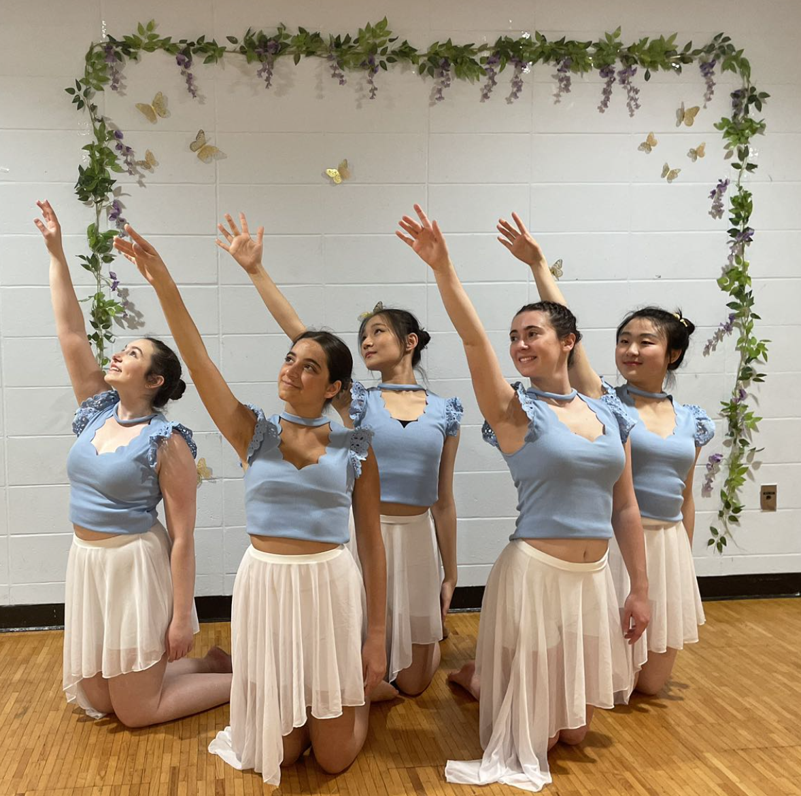
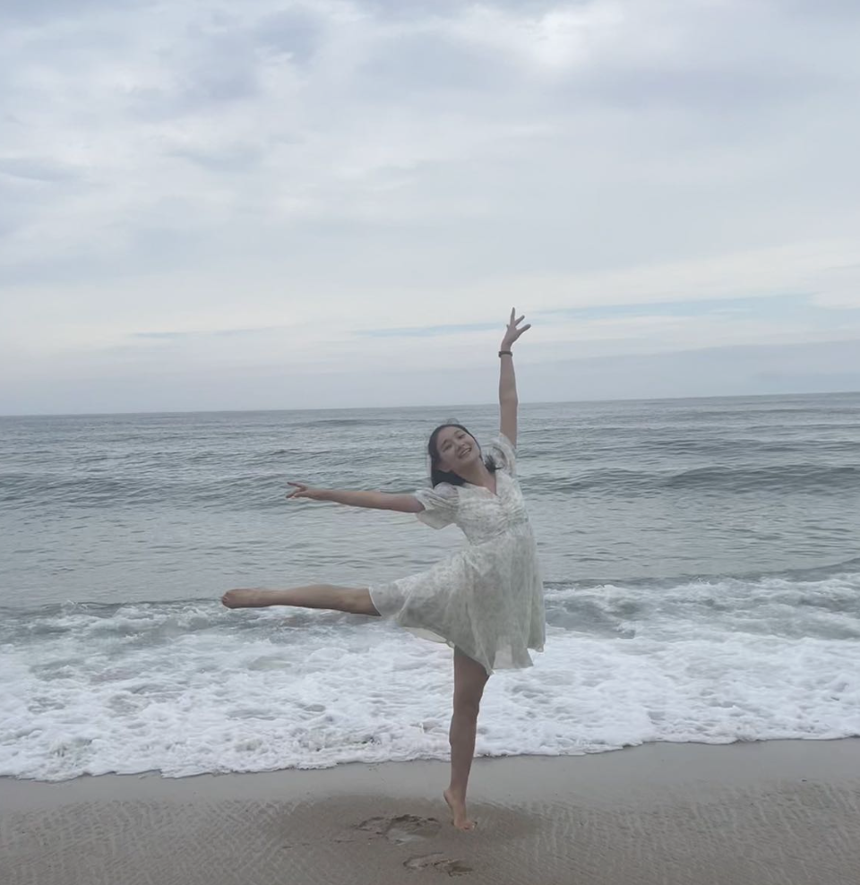
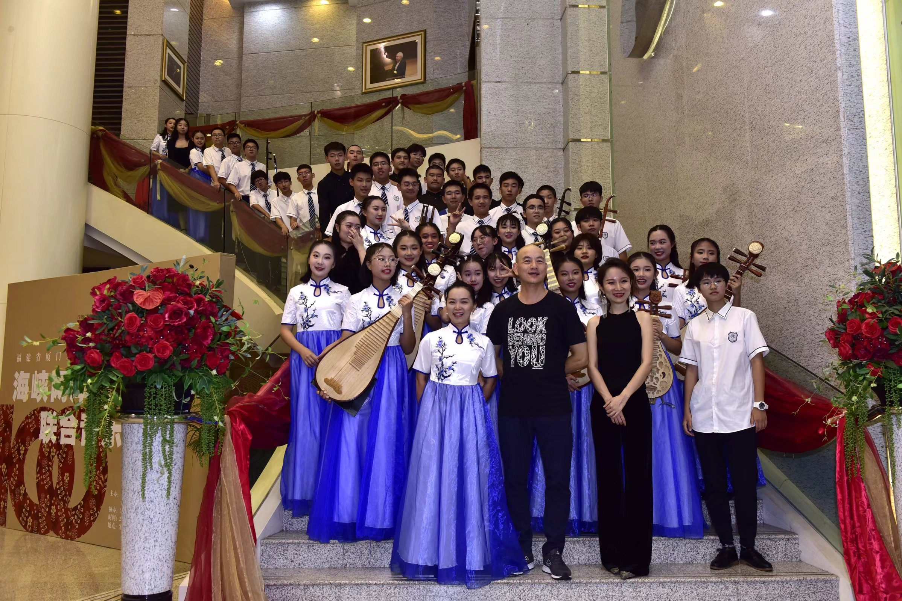
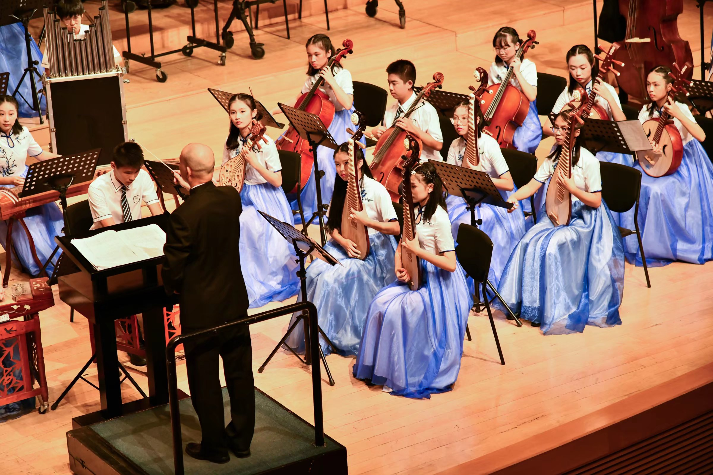
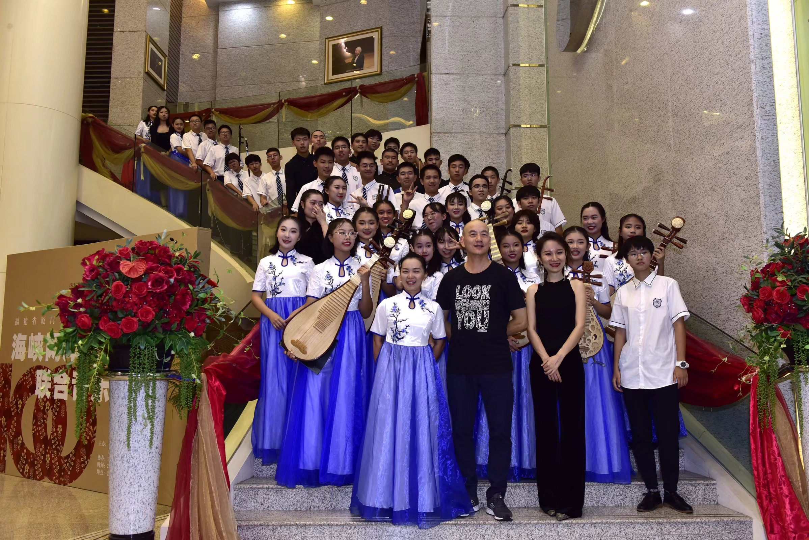
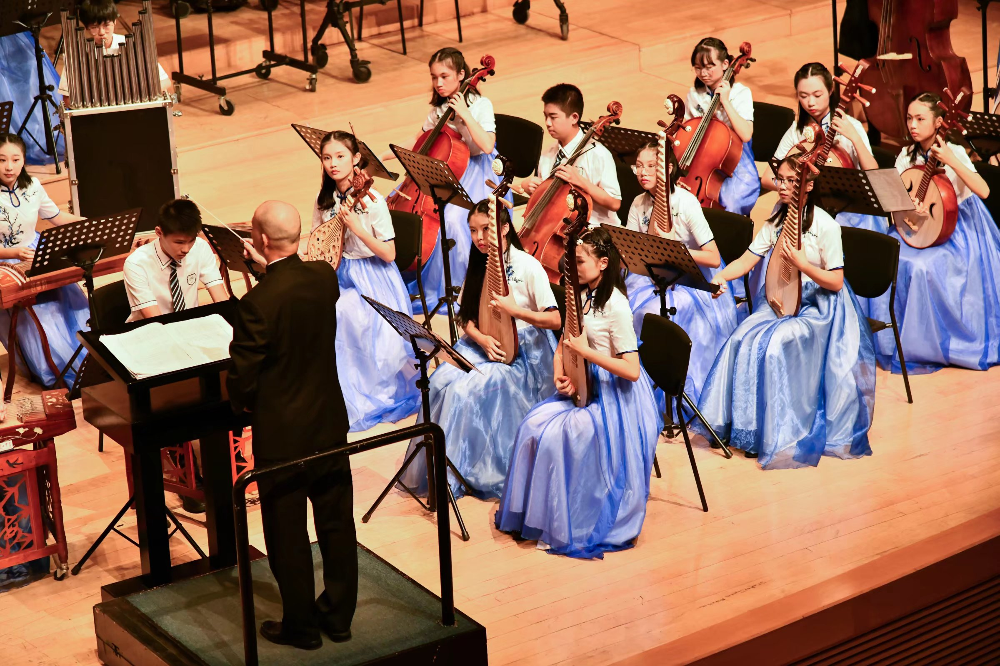

My Hobbies - 💃 Dance 💃
- I have a deep passion for dance, which I pursue whenever I have the opportunity. Over the course of more than 12 years, I have dedicated myself to Chinese classical dance, and I have gained three years of experience in contemporary dance as well.
- As a testament to my commitment to dance, I proudly serve as the Co-President of the Brandeis Adagio Dance Company, the largest dance club at Brandeis University.
 
- Last semester, I had the opportunity to choreograph a piece titled "Flying" for the first time.
- For more
information and dance video, please check this out:
Flying *-*
My Hobbies - 🎵 Pipa 🎵
 



- I love playing the pipa, a traditional Chinese musical instrument, during my spare time.
- It grow to become an important part of my life for the past 14 years.
- I was the high school orchestral leader in the pipa section
here's a video link to the past band performance:Taiwan Memorial Song *-*
Favorite Movie & TV Shows
Pride and Prejudice
- I must learn to be content with being happier than I deserve.
- Do not consider me now as an elegant female, intending to play you, but as a rational creature, speaking the truth from her heart.
- Follies and nonsense, whims and inconsistencies, do divert me, I own, and I laugh at them whenever I can.
Pride and Prejudice Soundtrack 🎵
Gilmore Girls
- Lorelai: "Hey, I have a huge dilemma that I need your opinion on. Am I more beautiful today than yesterday?"
- Rory: "Because I love you, you idiot!!"
- Luke: "Lorelei, this thing we're doing here, me, you. I just wanted you to know I'm in. I am all in."
- Logan: "People can live a hundred years without really living for a minute. You climb up here with me, it's one less minute you haven't lived."
- Michel: "People are particularly stupid today, I can't talk to any more of them."
- Emily: "Well, if you expect that muffin to fly back to the kitchen by itself you better go get it a cape."